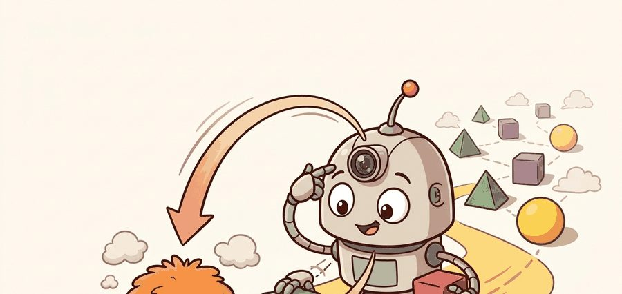
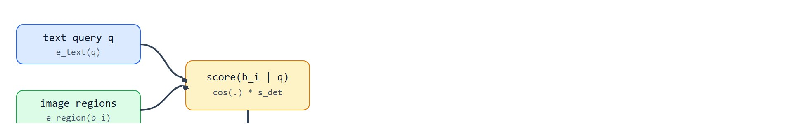
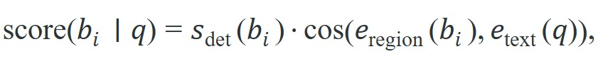
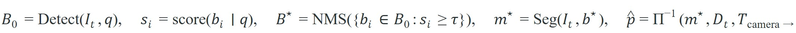

"Naming an object outside your training set is impressive. Telling the arm where to grasp it is the part that matters."
A Robot That Needed Boxes, Not Labels

This section assumes familiarity with contrastive image-text encoders from section 32.2, particularly the cosine-similarity scoring between region embeddings and text embeddings that drives open-vocabulary matching. The grounded boxes and masks produced here become inputs to scene-level reasoning in section 32.4, where the robot must answer structured questions about what it sees rather than simply locating a named region. The proposal-then-verify pipeline introduced here recurs in Part 9 alongside grasp planning and contact geometry, where pixel-accurate masks replace bounding boxes as the primary action interface.
Say "green bottle" to a classical detector trained on 80 fixed classes and it shrugs; say it to an open-vocabulary detector and it draws a box around the right object even though "bottle" was never a labeled category it was trained on. That is the leap this section is about: locating objects named by free-form text rather than by a closed list of training labels. The proposal-then-verify pipeline turns such a text query into a verified, world-frame action target, and a grounded box stays a hypothesis until geometry confirms it. Read the figure as an open-vocabulary detection contract. The model may name objects outside a fixed label set, but the robot still needs boxes, masks, frame transforms, confidence calibration, and a rejection path for ambiguous detections. This section has two halves: it first recaps how the vision-language encoder from section 32.2 turns a region and a text query into comparable embeddings, then it spends the remainder building the detection, scoring, masking, and verification machinery that turns that embedding comparison into a box, a mask, and finally a world-frame target a robot can act on.

Curriculum, depth, and self-containment. Open-vocabulary detection turns language into candidate boxes and masks, but the robot still needs frame transforms, uncertainty, and action-relevant geometry. For Vision-language encoders and open-vocabulary detection, the practical reading is to pin down the interface, assumptions, concrete example, and failure mode before comparing methods.
Production and evaluation contract. Detection is a proposal stage, not a guarantee that the named object is reachable, safe, or task relevant. For Vision-language encoders and open-vocabulary detection, treat the diagram, code, table, exercise, warning, and references as one evidence packet: boundary, artifact, tool choice, transfer check, failure mode, and source grounding.
Before accepting a Vision-language encoders and open-vocabulary detection result, name the loop variable that changed, the tool that makes it reproducible, the failure that would fool the metric, and the source that backs the claim.
Write the evidence row around open-vocabulary grounding: query phrase, detector or segmenter version, box or mask geometry, calibration frame, action consumer, false-positive label, and the recovery behavior when the phrase is underspecified.
A warehouse robot hears "fetch the cracked blue crate near the forklift" and must locate that exact object among hundreds it has never seen in training. Classical detectors fail: they require a fixed label for every category. Vision-language encoders changed that overnight by aligning image regions directly with free-form text, making every noun a potential detector. Embodied agents need this now because real deployments constantly introduce novel objects, seasonal SKUs, and improvised tools. Here you will build the proposal-then-verify pipeline, calibrate confidence so the arm ignores ambiguous detections, and trace the pixel-accurate mask that connects a language query to a grasp pose.
A grounded detector does not return "the answer." It returns a set of candidate regions conditioned on language. A prompt such as "red mug" yields boxes or points that are semantically relevant. It yields them often before the system knows whether the object is graspable, visible enough for tracking, or safe to approach. The scale difference is stark: a COCO-trained (COCO, or Common Objects in Context, is the standard benchmark dataset that fixes detectors to 80 predefined object categories) closed-vocabulary detector recognizes 80 fixed categories, while a CLIP-based (CLIP, or Contrastive Language-Image Pre-training, is the encoder introduced in section 32.2 that aligns images and text in a shared embedding space) open-vocabulary detector can ground any of the roughly 400,000 nouns in a standard English lexicon without retraining. This jump reshapes the training budget. A team at a logistics warehouse needed roughly 50,000 labeled training episodes to teach a closed-vocabulary detector each new seasonal SKU class. After the team switched to an open-vocabulary backbone, the same coverage required about 300 prompted examples per category.
That distinction matters because detectors sit upstream of planning. They form what practitioners call the language-conditioned proposal stage, much like how A* and sampling planners propose routes that still have to be checked against dynamics and safety constraints.
Language-grounded boxes should trigger verification, not immediate actuation. The robot still needs depth, temporal consistency, and interaction affordance before it commits to a grasp or a navigation subgoal.
If detection only ever yields candidates that must be verified, the first practical question is how those candidates get ranked in the first place, which is exactly what the scoring rule decides.
A standard grounding stack scores each candidate box $b_i$ for text query $q$ with a detection score and a language-alignment score. A simple decision rule is

followed by thresholding, non-maximum suppression, and optional mask refinement. In practice the multiplicative form tends to be more robust than either term alone, because it penalizes boxes that are visually dubious even when the language alignment is high. After a box is selected, a promptable segmentation model can turn it into a mask $m_i$ (a per-pixel label of which pixels belong to the object, as opposed to the box's coarse rectangle), which is often what the robot actually needs for contact planning or free-space reasoning.
So far: a candidate box is scored by multiplying detector confidence with text-image cosine similarity, low-scoring or duplicate boxes are removed by thresholding and non-maximum suppression, and the surviving box can then be refined into a pixel-accurate mask.
Viewed formally, this is a constrained optimization step under uncertainty: maximize the grounded score over proposals while enforcing overlap, visibility, and reachability constraints before the policy is allowed to act. The detector is therefore part of a state-space estimation pipeline (a system that tracks a belief about the world and updates it as new sensor evidence arrives, rather than a one-shot answer), not merely a captioning front end.
You can also read the post-detection filter as a lightweight Bayes update (a rule for revising a probability estimate as new evidence arrives) with an implicit covariance budget (a working notion of how much positional uncertainty remains tolerable before the target is considered localized). Image-space evidence proposes hypotheses, geometric checks shrink the feasible set, and the final policy consumes only the survivors. Those survivors are the proposals whose uncertainty has dropped enough for action.
Think of this like narrowing down which bus to board at a crowded terminal. First you glance at the destination boards and flag every bus that could plausibly be yours (the proposal stage). Then you walk closer and read the route number on each one, eliminating all but a few (the geometric check). Finally you only step onto a bus when your uncertainty about its destination has dropped low enough that you are willing to commit. Each filtering round does not change the buses; it changes how much evidence you have consumed and how many options remain live.
The final proposal set is therefore a filtered set $\mathcal B^\star = \operatorname{NMS}(\{b_i : \text{score}(b_i \mid q) \ge \tau\})$, where NMS denotes Non-Maximum Suppression, the step that removes lower-scoring duplicate boxes whose overlap with a higher-scoring box exceeds a threshold, and that respects overlap suppression before any action module sees it. That algorithmic detail matters because embodied failures often come from duplicate or conflicting boxes surviving proposal selection, not from the language query alone.
For two proposals $b_i$ and $b_j$, the usual overlap test is $\operatorname{IoU}(b_i, b_j) = \frac{\lvert b_i \cap b_j \rvert}{\lvert b_i \cup b_j \rvert}$, and NMS suppresses the lower-scoring box when $\operatorname{IoU}(b_i, b_j) > \eta$. In robotics that threshold is not a cosmetic hyperparameter, because a too-low $\eta$ can erase small manipulable targets while a too-high $\eta$ can leave duplicate boxes that confuse the grasp selector.
The NMS threshold $\eta$ is not a cosmetic hyperparameter. Set it too low and small manipulable targets (a narrow marker, a thin stylus) are suppressed because they partially overlap a larger high-scoring region. Set it too high and duplicate boxes for the same object both reach the grasp selector, which then picks one arbitrarily and may choose the proposal with worse mask support. A safe practice is to tune $\eta$ on your specific workspace geometry rather than inheriting the default value (typically 0.5 from 2D detection benchmarks) without validation. A similar failure arises from underspecified text prompts: querying "the cup" in a scene with three mugs returns the highest-scoring region, not the intended one, and the system has no signal that the query was ambiguous unless a confidence gap or a count check is built into the verification stage.
Once a box $b^\star \in \mathcal B^\star$ survives, the embodied handoff is still incomplete until the system derives a world-frame action target, for example $\hat p = \Pi^{-1}(m^\star, D_t, T_{\text{camera}\rightarrow\text{world}})$ from the refined mask $m^\star$, current depth map $D_t$, and camera extrinsics. This makes the contract explicit: open-vocabulary detection proposes image-space regions, while action consumes geometry in a robot frame.
A minimal accept rule is therefore: execute only if $b^\star = \arg\max_{b \in \mathcal B^\star} \text{score}(b \mid q)$, the mask support exceeds a visibility threshold $\lvert m^\star \rvert \ge \kappa$, and the projected target satisfies clearance and reachability checks $c(\hat p) \le 0$. Stated this way, the detector is one stage in a constrained pipeline rather than an oracle.
1. Generate candidate boxes from the image and query. 2. Score each box with joint visual and language evidence. 3. Apply non-maximum suppression. 4. Refine the winning boxes into masks. 5. Project the masks into depth or world coordinates. 6. Reject proposals that fail reachability, clearance, or temporal consistency checks.
Trace the score-then-suppress stage with four candidate boxes and threshold $\tau = 0.30$, IoU cutoff $\eta = 0.50$. Detector and text scores feed the multiplicative rule $\text{score} = s_{\text{det}} \cdot \cos(\cdot)$. Box A: $s_{\text{det}} = 0.90$, $\cos = 0.30 \Rightarrow 0.270$. Box B: $0.80 \cdot 0.85 = 0.680$. Box C: $0.75 \cdot 0.70 = 0.525$. Box D: $0.95 \cdot 0.15 = 0.143$. Step 1, threshold at $0.30$: A ($0.270$) and D ($0.143$) are dropped; B ($0.680$) and C ($0.525$) survive. Step 2, NMS: B is the top survivor, so compare it against C. Suppose B and C overlap heavily, $\operatorname{IoU}(B, C) = 0.62 > 0.50$, so C is suppressed as a duplicate of B. Final set $\mathcal B^\star = \{B\}$ with score $0.680$. Note that D had the highest raw detector confidence ($0.95$) yet lost decisively once language alignment was multiplied in, and C was a perfectly plausible box that vanished only because it overlapped the winner. Both outcomes are exactly what the pipeline is supposed to produce.
Written compactly, the pipeline is

That sequence makes the module boundary explicit: language chooses proposals, segmentation sharpens support, and geometry converts the final mask into something a controller can actually use.Code Fragment 1 compresses that ranking stage into a toy calculation, which makes the selection rule concrete before a maintained GroundingDINO (an open-vocabulary detector that proposes boxes from a text prompt) or Grounded-SAM (GroundingDINO composed with the Segment Anything Model, or SAM, a promptable segmentation network) pipeline hides it.
# Rank grounded boxes by combining detector confidence and text alignment.
# This is the minimal decision rule before non-maximum suppression and masking.
# The robot should only pass top-ranked boxes to geometric verification.
import numpy as np
boxes = np.array(["left_box", "center_box", "right_box"])
det_scores = np.array([0.93, 0.74, 0.81], dtype=float)
text_scores = np.array([0.42, 0.89, 0.51], dtype=float)
joint_scores = det_scores * text_scores
best = int(np.argmax(joint_scores))
print({"selected_box": boxes[best], "joint_scores": joint_scores.round(3).tolist()})The expected output is one selected region, center_box, together with three joint scores that show language evidence reshuffling the detector ranking. Reading the trace should make the logic legible: left_box was visually stronger on its own, but after text conditioning the center proposal becomes the correct candidate to pass into NMS, masking, and geometric verification.
Once the box is selected, the next question is whether the robot needs a rectangle or a pixel-accurate support region. For navigation or rough target selection, a box may be enough. For grasp planning, collision checking, or object-centric memory, a mask is usually much more useful.
The hand-built ranking rule takes 8 lines and makes the semantics obvious. In production, the same box-to-mask pipeline can be assembled in roughly 8 to 12 lines using GroundingDINO plus SAM or SAM 2. The maintained libraries handle prompt encoding, proposal generation, and mask refinement internally.
Code Fragment 2 shows the maintained pattern at the point where most builders actually work.
# Ground a phrase to boxes, then refine the boxes into masks.
# pip install groundingdino-py segment-anything
# The detector proposes regions; the segmenter sharpens them for action.
image = load_image("tabletop_scene.png")
boxes, phrases = grounding_dino_predict(image, text_prompt="red mug", box_threshold=0.35)
masks = sam_refine_masks(image=image, boxes=boxes)
print({"num_boxes": len(boxes), "num_masks": len(masks), "top_phrase": phrases[0]})The expected output is a small proposal set where the number of masks matches the surviving number of boxes and the top phrase remains tied to the user query. In a healthy GroundingDINO plus SAM-style pipeline, this tells the builder the semantic proposal stage and the geometric refinement stage stayed synchronized; if the counts diverged or the phrase changed, the handoff between detection and segmentation would need inspection.
GroundingDINO exposes two separate thresholds: box_threshold filters raw region proposals by detector confidence, and text_threshold filters by phrase-to-region alignment score. Lowering only box_threshold (say, from 0.35 to 0.20) to recover missed objects often floods the downstream SAM call with noisy proposals, which slows inference and degrades mask quality. The more targeted fix is to lower text_threshold instead, which relaxes the language-alignment gate without admitting visually weak boxes. When tuning for tabletop manipulation, a starting pair of box_threshold=0.35, text_threshold=0.25 typically recovers most missed targets while keeping the proposal count small enough for real-time SAM inference.
Tuning those thresholds settles which boxes survive, but a surviving box is still a flat rectangle, and the moment the robot has to touch the object that rectangle stops being enough.
A box is rarely the end of the story. If the robot must grasp, avoid, or remember the object, it often needs the mask to intersect with depth. The mask can be lifted into a point cloud, used to fit a 3D extent, or stored as a memory key for later re-identification. This is one of the clearest bridges from Chapter 32 to occupancy and neural scene representations.
Masks matter physically because a bounding box includes background pixels and occluding edges that corrupt depth estimates. A grasp planner using a box centroid can land on empty space beside a thin object; a pixel-accurate mask constrains the sampled point cloud to the object surface, giving the contact planner a stable estimate of extent and orientation.
A promptable segmenter such as SAM encodes the image once with a heavyweight encoder, then runs a lightweight mask decoder on the box prompt. The decoder returns three masks at increasing granularity (whole object, part, subpart), each scored. The robot picks the granularity its action needs: whole-object for grasping, part for insertion.
A grounded detector can return a semantically correct box around the wrong physical instance, such as the reflection of a mug in glass or a poster of a door instead of the real door. If the pipeline does not check depth, motion, or interaction affordance, the controller may act confidently on a non-actionable target.
A home robot asked to "pick up the sponge next to the sink" can use grounded detection to rank candidate regions, segmentation to isolate the object pixels, and depth projection to decide which sponge is actually on the counter rather than in the mirrored backsplash. The grounded box starts the reasoning, but the geometry finishes it.
Ambi Robotics deploys open-vocabulary grounding in its parcel-sorting cells, where a downstream pick policy must locate items it never saw during training as new SKUs arrive daily. A GroundingDINO-style text-conditioned proposal stage feeds box prompts into a SAM-based segmenter, and the resulting mask is back-projected through a depth camera so the suction gripper targets the object surface rather than a box centroid over empty packaging.
Open-vocabulary detection is like a good stage manager. It points the spotlight at the actor the script refers to, but the rest of the crew still has to make sure that actor is really on stage and not just in the backdrop.
Direction 1: Referring expression comprehension with end-to-end grounding transformers. Models that jointly perform detection and language grounding in a single decoder pass are replacing the two-stage GroundingDINO plus SAM pipeline. UNINEXT (2023, Yan et al., CVPR 2023) pioneered this, and in 2024 the idea matured in works such as OMG-LLaVA (Lu et al., 2024) and Qwen-VL-Grounding, where the Vision-Language Model (VLM) itself emits box coordinates as special tokens, collapsing the proposal and verification stages into one forward pass. The embodied relevance is latency: a single-pass grounder at 12 Hz can fit a real-time ROS 2 control loop; a two-stage cascade often cannot.
Direction 2: 3D open-vocabulary grounding without depth sensors. Prior work lifts 2D masks into 3D using an explicit depth camera. The 2024 direction, represented by OpenMask3D (Takmaz et al., 2023-2024, ETH Zurich) and its successors such as Open3DIS (Nguyen et al., 2024), performs instance-level open-vocabulary grounding directly on 3D point clouds, using CLIP features projected onto mesh surfaces. This matters for robot platforms that rely on stereo or RGB-only cameras where depth noise is high, and for outdoor mobile robots where depth sensors have limited range.
How fast is fast enough? Reported benchmarks on YCB-Video suggest that a two-stage GroundingDINO plus SAM cascade running at 4-6 Hz can cause trajectory divergence in roughly a third of pick-and-place trials, typically because the mask arrives stale relative to a moving gripper; exact rates vary by gripper speed and object size. That latency gap is the core motivation behind collapsing detection and segmentation into a single forward pass.
Direction 3: Temporally consistent video grounding for manipulation. Grounded SAM 2 (IDEA Research, 2024) extends promptable segmentation into video, but re-identification after full occlusion remains unsolved at manipulation speed. Groups at CMU and Stanford (2024-2025) are coupling video grounding with object-centric slot representations so that a mask lost behind a box can be recovered from appearance memory rather than a fresh query, avoiding the duplicate-mask failure documented on YCB-Video and BOP benchmarks.
Open problem for PhD students: All three directions above assume the text query is unambiguous. In real deployments ("give me the other cup"), the query is underspecified and the correct referent depends on discourse context, task history, and spatial relations among multiple identical instances. No current open-vocabulary detector has a principled rejection and re-query mechanism that integrates discourse history with geometric disambiguation. A tractable thesis scope is to design a confidence-gap detector that identifies when the top-two grounding scores are within a threshold, triggers a clarifying question to the user or a secondary viewpoint capture, and updates the grounded mask only after disambiguation. This requires integrating VLM grounding with dialogue state tracking, which is currently an open interface problem.
Would your current pipeline know what to do if two boxes both match the phrase "red mug" but only one is reachable? If the answer is no, your detector still lacks the verification stage that embodiment requires.
A grounded box is a hypothesis, not a destination; the robot earns the right to act only after geometry has audited the proposal and signed off. The most useful diagnostic artifact for this section is a four-panel record: original image, top grounded boxes with scores, selected mask over depth, and the final action decision. That artifact lets you see whether the failure arose from phrase grounding, box ranking, mask quality, or geometric follow-through. It also stops teams from reporting open-vocabulary success on screenshots while the physical robot still grasps the wrong object.
| Tool | Role | Use It When |
|---|---|---|
| GroundingDINO | Text-conditioned box proposals | You need open-vocabulary region proposals from natural language. |
| SAM or SAM 2 | Promptable mask refinement | You need pixel support for grasping, collision checks, or memory. |
| OpenCV | Crop logic and geometric post-processing | You need explicit image-space checks before world projection. |
| ROS 2 tf and depth topics | Projection to world and timing checks | You need the mask to survive into a frame-aware action interface. |
Open-vocabulary detection is powerful because it turns language into candidate action regions. It becomes embodied only after those regions are verified, segmented, and projected into the geometry the robot can actually use.
A common assumption is that open-vocabulary detection solves the object-finding problem end-to-end. If the model can name any object in a scene, the thinking goes, the robot can act on the returned result. This assumption is wrong. A detector returns image-space bounding boxes or masks, not action targets. The controller still needs depth back-projection, camera-to-robot frame transforms, reachability checks, clearance checks, and confidence gating before it can safely commit to a motion. Treat a grounded detection result as a structured hypothesis about which pixels are relevant. The robot converts that hypothesis into a world-frame target only after geometric verification passes. When verification fails, the robot rejects the proposal or re-queries.
Design a box-to-mask-to-action pipeline for one household task. State the text prompt, the grounded proposal rule, the geometric verification step, and the condition under which the robot should ask for another view instead of acting.
Goal: see firsthand how the box and text thresholds reshape the proposal set, and feel why the multiplicative score matters. Tools: pip install groundingdino-py supervision, one cluttered tabletop photo with several mugs of different colors (your phone camera is fine), a CPU is enough for a single image. Procedure: run GroundingDINO with the prompt "red mug" and print, for every returned box, its detector confidence, its text-alignment score, and the IoU between each pair of surviving boxes. What to vary: sweep box_threshold over {0.20, 0.35, 0.50} crossed with text_threshold over {0.15, 0.25, 0.40}, and try ambiguous prompts ("the cup", "the other mug") against the unambiguous "red mug". What to observe: at low box_threshold the proposal count explodes with visually plausible but wrong-color boxes that high text-alignment would have rejected; for the ambiguous prompts, record the gap between the top-two scores and confirm it shrinks, which is exactly the confidence-gap signal the verification stage needs to trigger a clarifying question. Plot proposal count versus the two thresholds to find the operating point that keeps your true mug while suppressing duplicates.
Ren et al. (2024). "Grounded SAM: Assembling Open-World Models for Diverse Visual Tasks."
A practical integration paper showing how grounding and segmentation can be composed into a wider open-world perception pipeline.
IDEA Research (2024-2026). "Grounded SAM 2" GitHub repository.
Useful for current video-grounding and track-anything workflows, especially when Chapter 32 ideas must survive across time rather than only on one image.
The central open-vocabulary detection reference for text-conditioned boxes.
Kirillov et al. (2023). "Segment Anything."
The promptable segmentation baseline that turns boxes or points into masks usable for robotics.
Beginner (weekend): Open-vocabulary tabletop picker in PyBullet. Build a pick-and-place simulation in PyBullet where a robot arm responds to free-text object names (for example, "red cube" or "blue cylinder") by running GroundingDINO on a rendered camera view and using the returned bounding box centroid as the grasp target. The key challenge is connecting the pixel-space box to a world-frame grasp pose through the simulated camera intrinsics and depth buffer without a full ROS 2 stack.
Intermediate (1-2 weeks): Language-conditioned manipulation policy in Isaac Lab with open-vocabulary perception. Extend an Isaac Lab manipulation environment so that task instructions are given as natural-language phrases; use a GroundingDINO plus SAM pipeline to ground each phrase to a mask, project the mask into a point cloud, and feed the resulting 3D target to a learned policy trained with LeRobot. The key challenge is keeping the perception pipeline within the 10 ms control budget so the grounded mask does not arrive stale relative to the physics state, which requires caching the CLIP image embedding across frames and re-running only the lightweight mask decoder when the object moves.